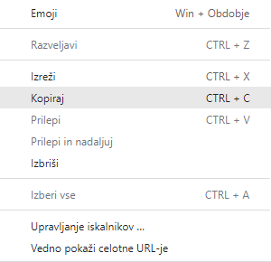

Če hočeš uporabiti stavnico, moraš uporabiti drugačen brskalnik!
To storiš tako:
2-krat klikni na povezavo spletne strani.
Ko se povezava obarva modro, klikni na desni gumb miške. Na tem seznamu klikni na Kopiraj(Copy).

Po kopiranju povezave odpri enega izmed naslednjih brskalnikov:
Na enem izmed teh brskalnikov v to vrstico prilepi povezavo spletne strani.
Za prikaz menija spet desno klikni (na iskalno vrstico)
Ob kliku te bo preusmerilo na delujočo stran Stavnice.